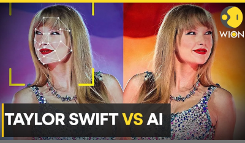
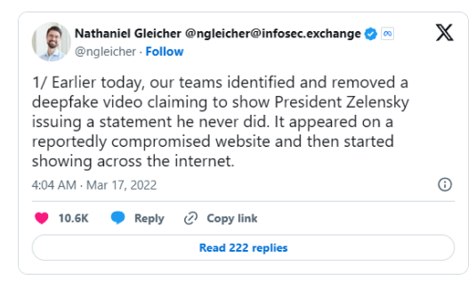

In January 2024, AI-generated sexually explicit images of American singer
Taylor Swift were disseminated across multiple platforms, including X
(formerly Twitter), Facebook, Reddit, and Instagram. One tweet containing
these images garnered over 45 million views before removal. The controversy
drew condemnation from various organizations and individuals, including the
White House Press Secretary and Microsoft CEO Satya Nadella, highlighting
the pressing need for legislation against deepfake pornography. (Conger
& Yoon, 2024)
Non-Consensual Explicit Content
Recommendations
Long-Term Recommendations

Political Deception
A Forbes article details a real-life incident where cybercriminals used
AI-generated voice deepfaketechnology to impersonate the CEO of a parent
company and successfully tricked the CEO of a UK-based energy firm into
transferring $243,000 to a fraudulent account. The scammers mimicked the
exact tone, accent, and inflections of the executive's voice, making
the request seem authentic and urgent. This case is a prominent example of
how voice deepfakes can facilitate sophisticated financial fraud, raising
serious concerns about the potential for misuse in corporate and personal
settings. (Damiani, 2019)
Financial Fraud
- - Use browser plugins that detect potential deepfakes.
- - Follow trusted news sources with transparent verification processes.
Personal Steps:
-
- Collaboration with Tech Companies
Platforms like YouTube, Facebook, and X should quickly flag and remove
misleading deepfakes while improving AI-based detection tools.
Implement legislation to penalize the creation and distribution of malicious
deepfakes, particularly during elections and national crises.
-
- Promote Public Media Literacy
Public awareness campaigns should educate people on how to recognize
deepfakes by spotting inconsistencies such as unnatural blinking, mismatched
lighting, or irregular speech patterns.
-
- Strengthen Media Verification
Governments and media outlets should implement robust verification processes
for digital content, such as blockchain-based provenance tracking and
deepfake detection software.
Political Deception Mitigation
1.
- - Be cautious of urgent financial requests, even from familiar contacts.
- - Always confirm sensitive requests using a second communication channel (e.g., phone verification if you receive a suspicious email or call).
Personal Steps:
-
- AI Detection Software
Companies should invest in AI-powered tools designed to detect synthesized
voices and videos in real time during calls and conferences.
- - Employee Training
Regular cybersecurity training sessions should cover the risks of voice and
video deepfakes, teaching employees to verify unusual requests, especially
those involving large sums of money.
-
- Identity Verification Upgrades
Organizations should adopt multifactor authentication and biometrics to
confirm identities during financial transactions, reducing reliance on voice
and video alone.
Financial Fraud Mitigation
2.
Personal Steps:
-
- Awareness and Reporting Mechanisms
Develop and promote easy reporting mechanisms for victims and provide
psychological and legal support.
-
- Digital Fingerprints
Encourage the use of watermarks and digital identifiers that can make
deepfakes easily recognizable.
-
- Faster Content Takedown
-
- Strict Legal Frameworks
Governments should enforce stricter laws criminalizing the creation,
distribution, and possession of non-consensual explicit deepfakes.
Non-Consensual Explicit Content Mitigation
-
- Be skeptical of videos or audios that seem out of character or
contradict previous statements by public figures.
- - Use trusted deepfake detection apps or services to check suspicious content.
Personal Steps:
- - Educational Programs
Schools, universities, and workplaces should include sessions on digital
safety and misinformation awareness to foster long-term resilience against
deepfakes.
- - Partnerships and Collaboration
Governments, NGOs, tech companies, and civil society must collaborate to
monitor and shut down sites or forums that produce harmful deepfake content.
- - Tech Industry Standards
Advocate for international standards for ethical AI development to prevent
the proliferation of harmful deepfake tools.
General Mitigation Strategies for All Deepfake Risks
- - Ethical Guidelines for Developers
Promote ethical guidelines for AI developers to prevent the misuse of
generative AI technologies.
-
- Global Cooperation
International organizations such as the UN should develop treaties and
agreements to regulate the malicious use of deepfake technology.
- - Continuous AI Improvement
Invest in research to improve AI’s ability to detect and expose deepfakes at
the same rate the technology evolves.

Summary

 About Us
Demonstrations
Threats & Recommendations
Home
About Us
Demonstrations
Threats & Recommendations
Home
The Threats of Deepfake
3.
4.